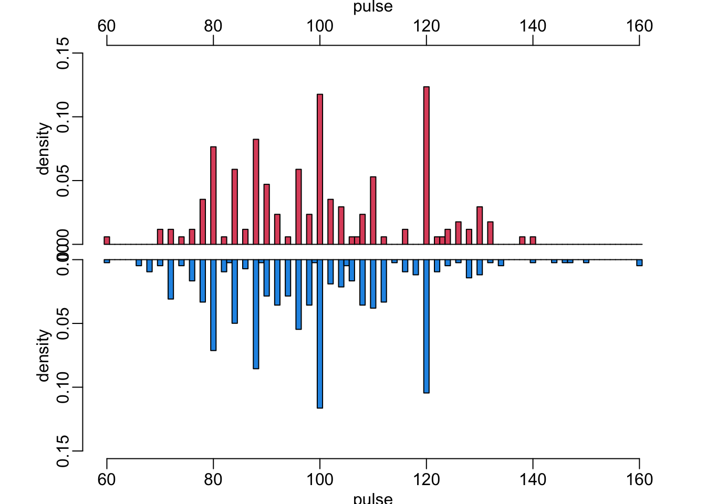
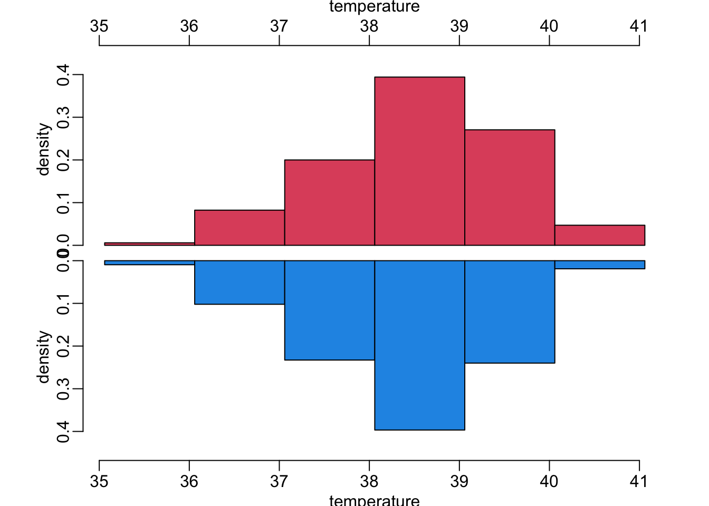
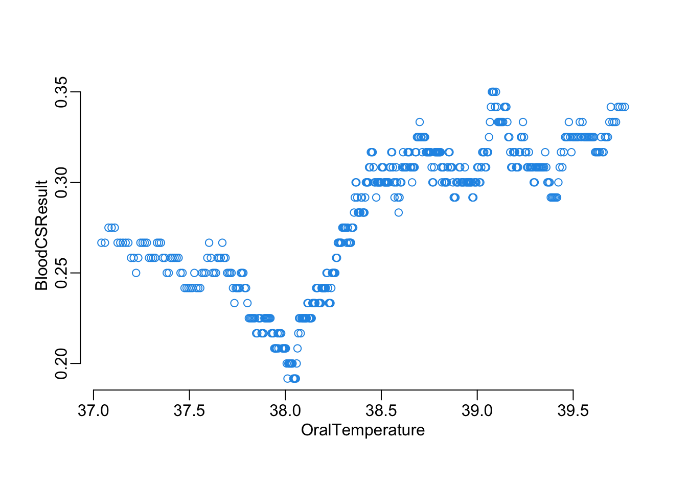
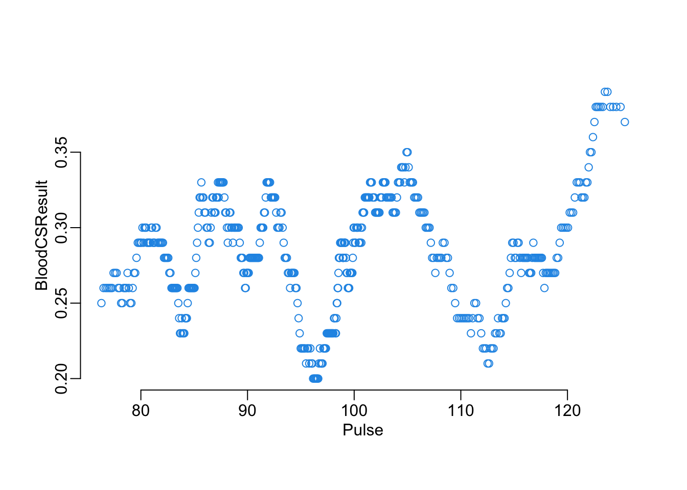
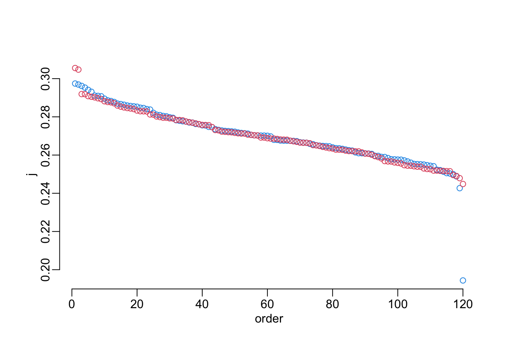

data_path <- paste0("/Users/MarcChoisy/Library/CloudStorage/",
"OneDrive-OxfordUniversityClinicalResearchUnit/",
"GitHub/choisy/typhoid/")Clinical score
Synopsis
1 discretizing the continuous variables: here it’s the temperature and the heart rate. To start with, let’s binarize it (but latter on we could run a random forest algorithm in order to the look for the relationship and define an optimal number of classes to discretize this variable)
2 run an ElasticNet logistic regression: for a given discretization choice made on the continuous variables, run an ElasticNet logistic regression, tuning the penalty and mixture hyper-parameters by 10-fold cross-validation of the training data set.
Parameters
The path to the data folder:
Packages
The required packages:
required_packages <- c("dplyr", "purrr", "stringr", "rsample", "glmnet", "glmnetUtils",
"parallel", "magrittr", "tidyr")Making sure that the required packages are installed:
to_inst <- required_packages[! required_packages %in% installed.packages()[, "Package"]]
if (length(to_inst)) install.packages(to_inst)
rm(required_packages, to_inst)Loading some of these packages:
library(dplyr)
library(purrr)
library(rsample)
library(glmnet)
library(glmnetUtils)
library(tidyr)Utilitary functions
A function that computes the moving average of a vector x with a window w:
moving_average <- function(x, w = 20) {
x |>
seq_along() |>
map(~ tail(c(0, x), -.x)) |>
head(-w + 1) |>
map(head, w) |>
map_dbl(mean)
}A function that computes the specificity from a confusion matrix x:
specificity <- function(x) {
x[1, 1] / sum(x[1, ])
}A function that computes the sensitivity from a confusion matrix x:
sensitivity <- function(x) {
x[2, 2] / sum(x[2, ])
}A function that computes the accuracy from a confusion matrix x:
accuracy <- function(x) {
sum(diag(x)) / sum(x)
}A function that computes Youden’s J index from a confusion matrix x:
j_index <- function(x) {
specificity(x) + sensitivity(x) - 1
}A function that converts a named vector x of coefficient values into a named vector of points of a clinical score, where n is the number of number of bins used over the range of x:
coef2scores <- function(x, n) {
xmin <- min(x)
xmax <- max(x)
stepv <- min(diff(seq(xmin, xmax, le = n)))
ubrks <- seq(xmin - stepv, xmax + stepv, le = n)
cbrks <- ubrks - ubrks[which.min(abs(ubrks))]
setNames(sort(c(-(1:sum(cbrks < 0)), 1:sum(cbrks > 0)))[as.integer(cut(x, cbrks))],
stringr::str_remove(names(x), "TRUE")) |>
replace_na(0)
}A function that computes the points from a data frame df of binary valued variables and a vector cscore of clinical scores. The names of the data frame and the vector should be the same, although not necessarily in the same order:
make_points <- function(df, cscore) {
colSums(t(as.matrix(df)) * cscore[names(df)])
}A function that splits a data frame x by rows into a list of 1-row data frames:
df2list_rowwise <- function(x) {
map(1:nrow(x), ~ slice(x, .x))
}A function that generates the values of thresholds on a x vector that should be tested, where by is the step by which these values should be generated:
make_thresholds <- function(x, by = 1) {
seq(min2(x) + by, max2(x) - by, by)
}A wrapper around rsample’s bootstraps() function that returns the actual data frames instead of the row indexes:
bootstraps2 <- function(data, ...) {
x <- bootstraps(data, ...)
map(x$splits, ~ data[.$in_id, ])
}A function that converts a logical vector x into a factor, making sure that it’s a factor of 2 levels, TRUE and FALSE, even if the x contains only one of these levels:
log2fac <- function(x) {
factor(x, levels = c("FALSE", "TRUE"))
}The following function tunes the penalty \(\lambda\) and mixture \(\alpha\) hyper-parameters of a logistic ElasticNet regression and returns the tuned values:
tune_model <- function(formula, data) {
model <- glmnetUtils::cva.glmnet(formula, data, family = binomial)
lambdas <- map(model$modlist, ~ as_tibble(.x[1:2]))
alphas <- rep(model$alpha, map_int(lambdas, nrow))
the_grid <- bind_rows(lambdas)
the_grid$alpha <- alphas
the_grid |>
filter(cvm == min(cvm)) |>
select(lambda, alpha) |>
unlist()
}For each element of a given vector x, the following two functions return the minimum (maximum) of this element and 0:
min2 <- function(x) sum(map_int(x, min, 0))
max2 <- function(x) sum(map_int(x, max, 0))A tuned version of parallel::mclapply():
mclapply2 <- function(...) {
parallel::mclapply(..., mc.cores = parallel::detectCores() - 1)
}A version of bind_cols() that works on two data frames, switching their order in the binding process:
bind_cols2 <- function(x, y) bind_cols(y, x)A tuned version of the plot() function:
plot2 <- function(...) plot(..., col = 4)A function that adds an order variable to a data frame x according to a variable v:
add_position0 <- function(x) {
x |>
arrange(desc(j)) |>
mutate(order = row_number())
}add_position <- function(x, v) {
x |>
arrange(desc({{ v }})) |>
mutate(order = row_number())
}Reading the clean data
The Nepal data set:
nepal_raw <- readRDS(paste0(data_path, "clean_data/nepal.rds"))Feature engineering
Recoding durations (in number of days) into presence / absence and remove observations with missing values:
nepal_recoded <- nepal_raw |>
mutate(across(c(Cough, Diarrhoea, vomiting, Abdopain, Constipation, Headache,
Anorexia, Nausea, Typhoid_IgM), ~ .x > 0)) |>
na.exclude()The subset of symptoms variables:
nepal_symptoms <- select(nepal_recoded, BloodCSResult, Cough:Hepatomegaly)Let’s have a look at the binary variables:
make_tables <- function(x) {
x |>
pivot_longer(everything(), names_to = "variable", values_to = "value") |>
group_by(variable) |>
group_modify(~ as_tibble(table(.x))) |>
pivot_wider(names_from = value, values_from = n)
}
nepal_symptoms |>
select(where(is.logical)) |>
make_tables() |>
arrange(`TRUE`)# A tibble: 11 × 3
# Groups: variable [11]
variable `FALSE` `TRUE`
<chr> <int> <int>
1 Splenomegaly 570 21
2 Hepatomegaly 559 32
3 Constipation 516 75
4 Diarrhoea 450 141
5 vomiting 424 167
6 BloodCSResult 421 170
7 Abdopain 401 190
8 Cough 339 252
9 Nausea 318 273
10 Anorexia 153 438
11 Headache 80 511An alternative way to look at them:
nepal_symptoms |>
select(where(is.logical)) |>
group_by(BloodCSResult) |>
group_modify(~ make_tables(.x)) |>
select(variable, everything()) |>
arrange(variable, BloodCSResult)# A tibble: 20 × 4
# Groups: BloodCSResult [2]
variable BloodCSResult `FALSE` `TRUE`
<chr> <lgl> <int> <int>
1 Abdopain FALSE 298 123
2 Abdopain TRUE 103 67
3 Anorexia FALSE 115 306
4 Anorexia TRUE 38 132
5 Constipation FALSE 370 51
6 Constipation TRUE 146 24
7 Cough FALSE 228 193
8 Cough TRUE 111 59
9 Diarrhoea FALSE 341 80
10 Diarrhoea TRUE 109 61
11 Headache FALSE 66 355
12 Headache TRUE 14 156
13 Hepatomegaly FALSE 399 22
14 Hepatomegaly TRUE 160 10
15 Nausea FALSE 236 185
16 Nausea TRUE 82 88
17 Splenomegaly FALSE 406 15
18 Splenomegaly TRUE 164 6
19 vomiting FALSE 310 111
20 vomiting TRUE 114 56A function that makes mirrored histograms to compare histograms of a continuous variable in case of blood culture positive (red) and negative (blue):
mirror_hist <- function(x, xlab, ymax, epsilon = .18) {
variable <- pull(nepal_symptoms, {{ x }})
hist2 <- function(...) {
hist(...,
freq = FALSE,
breaks = (min(variable) - .5):(max(variable) + .5),
ylab = "density",
main = NA)
}
opar <- par(mfrow = 2:1)
plt <- par("plt")
plt[3:4] <- c(0, 1 - epsilon)
par(plt = plt)
nepal_symptoms |>
filter(BloodCSResult) |>
pull({{ x }}) |>
hist2(ylim = c(0, ymax), xlab = NA, axes = FALSE, col = 2)
axis(2); axis(3)
mtext(xlab, line = 1.5)
plt[3:4] <- c(epsilon, 1)
par(plt = plt)
nepal_symptoms |>
filter(! BloodCSResult) |>
pull({{ x }}) |>
hist2(ylim = c(ymax, 0), xlab = xlab, col = 4)
par(opar)
}Let’s now look at the continuous variables:
mirror_hist(Pulse, "pulse", .15)
mirror_hist(OralTemperature, "temperature", .45)
Another way to look at the effect of a continuous on the blood test result, with this function that plots a moving average of the probability of positive result of a variable x of the the data frame data as a function of a moving average of the BloodCSResult variable of this same data frame, with w the window parameter of these moving averages:
plot_smooth <- function(x, w, data) {
data[order(data[[x]]), ] |>
select({{ x }}, BloodCSResult) |>
map_dfc(moving_average, w) |>
plot2()
}Let’s have a look at the effect of pulse and temperature:
plot_smooth("OralTemperature", 120, nepal_symptoms)
plot_smooth("Pulse", 100, nepal_symptoms)
Specific functions
This function recodes the OralTemperature and Pulse variable of the data set x according to the thresholds temp and pulse respectively:
recoding <- function(x, temp, pulse) {
mutate(x, across(OralTemperature, ~ .x > temp),
across(Pulse, ~ .x > pulse))
}This function (i) recodes the OralTemperature and Pulse variables of the data set x according to the thresholds temp and pulse respectively, (ii) transforms the explanatory variables (all of them binary now) into a variable of points according to the score (iii) converts these points into a prediction according to threshold that (iv) is used together with the corresponding observed values to produce a confusion matrix:
confusion_matrix <- function(data, temp, pulse, score, threshold) {
tibble(obsv = log2fac(data$BloodCSResult),
pred = log2fac(make_points(
recoding(data, temp, pulse)[, -1], score) > threshold)) |>
table()
}This function converts a vector of thresholds values into a list of confusion matrices generated by the function confusion_matrix on the data set data, with parameterstempandpulseand the scorescore`:
matrix_from_threshold <- function(data, temp, pulse, score, thresholds) {
map(thresholds, confusion_matrix,
data = data, temp = temp, pulse = pulse, score = score)
}For each value of the vector thresholds of decision-making threshold values, this function computes the average Youden J index averaged across bootstrapped versions of the data set data, where model predictions are made based on the temp and pulse threshold for data recoding and the clinical score score:
find_best_threshold <- function(data, temp, pulse, score, thresholds, ...) {
data |>
bootstraps2(...) |>
map(matrix_from_threshold, temp = temp, pulse = pulse, score = score,
thresholds = thresholds) |>
map(map, j_index) |>
unlist() |>
matrix(length(thresholds)) |>
rowMeans() |>
setNames(thresholds)
}For a given row rowX of a data frame that contains values of temp and pulse as well corresponding tuned coefficients of the logistic ElasticNet model, this function returns the tuned n and t hyper-parameters as well as the corresponding value of the Youden J index. n_vals is the vector of values of the n parameter of the function coef2scores() to try, by is the parameter passed to the make_thresholds() function to generate the decision-making thresholds values to try, and data is the data frame used to do the computation:
n_t_j <- function(rowX, n_vals, data, by = 1) {
j_values <- n_vals |>
map(coef2scores, x = unlist(rowX[["coeffs"]])) |>
map(~ find_best_threshold(data, rowX$temp, rowX$pulse, .x,
make_thresholds(.x, by))) |>
map(~ .x[which.max(.x)])
which_n <- which.max(j_values)
tibble(n = n_vals[which_n],
t = as.integer(names(j_values[[which_n]])),
j = max(unlist(j_values)))
}This function returns the coefficient of a tuned ElasticNet logistic regression explaining the BloodCSResult variable of the data frame x where the OralTemperature and Pulse variable are recoding using the temp and pulse threshold values:
tuned_coefficients <- function(x, temp, pulse) {
x_rec <- recoding(x, temp, pulse)
frmla <- BloodCSResult ~ .
hyper <- tune_model(frmla, x_rec)
model <- glmnet(model.matrix(frmla, x_rec)[, -1], as.factor(x_rec$BloodCSResult),
binomial, alpha = hyper["alpha"], lambda = hyper["lambda"])
out <- coef(model)[-1, ]
setNames(out, stringr::str_remove(names(out), "TRUE"))
}Spliting the data
Let’s create the train and test data sets:
data_split <- initial_split(nepal_symptoms)
train_data <- training(data_split)
test_data <- testing(data_split)Model training
In series
The pipeline of the inner loop (i.e. tuning hyper-parameters n and t on data frame data). The inner loop results are added to the outer loop results x. Tried values of n are provided directly whereas tried values of t and generated in the loop (as they depends on the values of n) and the process is controled by the parameter by.
add_ntJ <- function(x, n, data, by = 1) {
x |>
df2list_rowwise() |>
map_dfr(n_t_j, n, data, by) |>
bind_cols2(x)
}The full pipeline with the outer loop (hyper-parameters temp and pulse) and the inner loop (hyper-parameters n and t (whose exploration is controled by by)):
serial_pipeline <- function(data, temp, pulse, n, by = 1) {
expand.grid(temp = temp, pulse = pulse) |>
as_tibble() |>
mutate(coeffs = map2(temp, pulse, tuned_coefficients, x = data)) |>
add_ntJ(n, data, by)
}Takes 74’:
out_serial <- serial_pipeline(train_data, seq(35, 42, .5), seq(60, 130, 10), 3:15, 1)In parallel
parallel_pipeline <- function(data, temp, pulse, n, by = 1) {
# initial grid:
grid <- expand.grid(temp = temp, pulse = pulse)
# adding outer loop:
grid <- grid |>
as_tibble() |>
mutate(coeffs = mclapply2(1:nrow(grid),
function(x) tuned_coefficients(data,
grid$temp[x],
grid$pulse[x])))
# adding inner loop:
grid |>
df2list_rowwise() |>
mclapply2(n_t_j, n_vals = n, data = data, by = by) |>
bind_rows() |>
bind_cols2(grid)
}Takes 18’:
out_parallel <- parallel_pipeline(train_data,
seq(35, 42, .5), seq(60, 130, 10), 3:15, 1)Processing the outputs
filter(out_serial, j == max(j))# A tibble: 1 × 6
temp pulse coeffs n t j
<dbl> <dbl> <list> <int> <int> <dbl>
1 36.5 130 <dbl [12]> 7 3 0.297filter(out_parallel, j == max(j))# A tibble: 1 × 6
temp pulse coeffs n t j
<dbl> <dbl> <list> <int> <int> <dbl>
1 35.5 120 <dbl [12]> 12 6 0.306Let’s compare the first best models:
arrange(out_serial, desc(j))# A tibble: 120 × 6
temp pulse coeffs n t j
<dbl> <dbl> <list> <int> <int> <dbl>
1 36.5 130 <dbl [12]> 7 3 0.297
2 39.5 110 <dbl [12]> 14 7 0.297
3 37.5 60 <dbl [12]> 13 2 0.296
4 42 120 <dbl [12]> 12 7 0.295
5 41 120 <dbl [12]> 12 7 0.294
6 38 110 <dbl [12]> 13 6 0.293
7 39 120 <dbl [12]> 10 8 0.291
8 36.5 70 <dbl [12]> 15 2 0.291
9 37 80 <dbl [12]> 10 0 0.291
10 39 80 <dbl [12]> 15 8 0.290
# ℹ 110 more rowsarrange(out_parallel, desc(j))# A tibble: 120 × 6
temp pulse coeffs n t j
<dbl> <dbl> <list> <int> <int> <dbl>
1 35.5 120 <dbl [12]> 12 6 0.306
2 36 120 <dbl [12]> 13 8 0.305
3 41.5 130 <dbl [12]> 13 6 0.292
4 37.5 120 <dbl [12]> 13 6 0.292
5 40.5 70 <dbl [12]> 11 4 0.291
6 41.5 80 <dbl [12]> 14 5 0.291
7 35.5 70 <dbl [12]> 13 4 0.290
8 36 80 <dbl [12]> 14 5 0.290
9 38.5 120 <dbl [12]> 12 9 0.289
10 36 130 <dbl [12]> 7 3 0.288
# ℹ 110 more rowsout_all <- bind_rows(mutate(add_position(out_serial, j), batch = "serial"),
mutate(add_position(out_parallel, j), batch = "parallel"))with(out_all, plot(order, j, col = c(serial = 4, parallel = 2)[batch]))
This shows that there is still a bit of variability.
Model testing
best_model_serial <- filter(out_serial, j == max(j))
best_model_parallel <- filter(out_parallel, j == max(j))extract_score <- function(x) {
with(x, list(tempt = temp,
pulse = pulse,
score = coef2scores(first(coeffs), n),
thres = x$t))
}model_serial <- extract_score(best_model_serial)
model_parallel <- extract_score(best_model_parallel)make_predictions <- function(data, model) {
data |>
recoding(model$tempt, model$pulse) |>
select(-BloodCSResult) |>
make_points(model$score) |>
magrittr::is_greater_than(model$thres)
}make_predictions(test_data, model_serial) [1] FALSE FALSE FALSE FALSE FALSE FALSE FALSE FALSE FALSE FALSE TRUE FALSE
[13] FALSE FALSE FALSE FALSE FALSE FALSE TRUE FALSE FALSE FALSE FALSE TRUE
[25] FALSE TRUE FALSE FALSE FALSE FALSE FALSE TRUE FALSE FALSE FALSE FALSE
[37] FALSE TRUE FALSE FALSE FALSE FALSE FALSE FALSE FALSE FALSE TRUE FALSE
[49] TRUE FALSE FALSE FALSE FALSE TRUE TRUE TRUE FALSE TRUE TRUE TRUE
[61] FALSE FALSE FALSE FALSE FALSE TRUE FALSE FALSE FALSE TRUE FALSE FALSE
[73] FALSE FALSE TRUE FALSE FALSE TRUE TRUE TRUE TRUE FALSE FALSE FALSE
[85] FALSE TRUE FALSE FALSE TRUE FALSE TRUE FALSE TRUE FALSE FALSE FALSE
[97] FALSE FALSE FALSE FALSE FALSE TRUE FALSE TRUE TRUE TRUE FALSE FALSE
[109] FALSE FALSE TRUE TRUE TRUE FALSE TRUE FALSE TRUE FALSE TRUE TRUE
[121] TRUE TRUE TRUE TRUE TRUE TRUE TRUE FALSE FALSE FALSE TRUE TRUE
[133] TRUE FALSE TRUE FALSE FALSE TRUE TRUE TRUE TRUE TRUE TRUE TRUE
[145] TRUE TRUE TRUE TRUEmake_predictions(test_data, model_parallel) [1] FALSE FALSE FALSE FALSE TRUE FALSE FALSE FALSE FALSE FALSE TRUE FALSE
[13] FALSE FALSE FALSE FALSE FALSE FALSE TRUE FALSE FALSE FALSE FALSE TRUE
[25] FALSE TRUE FALSE FALSE FALSE FALSE FALSE TRUE FALSE FALSE FALSE FALSE
[37] FALSE TRUE FALSE FALSE FALSE FALSE FALSE TRUE FALSE FALSE TRUE FALSE
[49] TRUE FALSE FALSE FALSE FALSE TRUE TRUE TRUE FALSE TRUE TRUE TRUE
[61] FALSE FALSE FALSE FALSE FALSE TRUE FALSE FALSE FALSE TRUE FALSE FALSE
[73] FALSE FALSE TRUE FALSE FALSE TRUE TRUE TRUE TRUE FALSE FALSE FALSE
[85] FALSE TRUE FALSE FALSE TRUE FALSE TRUE FALSE TRUE FALSE FALSE FALSE
[97] FALSE FALSE FALSE FALSE FALSE TRUE FALSE TRUE TRUE TRUE FALSE FALSE
[109] FALSE FALSE TRUE TRUE TRUE FALSE TRUE FALSE TRUE FALSE TRUE TRUE
[121] TRUE TRUE TRUE TRUE TRUE TRUE TRUE FALSE FALSE FALSE TRUE TRUE
[133] TRUE FALSE TRUE FALSE FALSE TRUE TRUE TRUE TRUE TRUE TRUE TRUE
[145] TRUE TRUE TRUE TRUEconfmat_test <- function(data, model) {
data |>
mutate(predictions = make_predictions(data, model)) |>
select(BloodCSResult, predictions) |>
mutate_all(log2fac) |>
table()
}confmat_serial <- confmat_test(test_data, model_serial)
confmat_parallel <- confmat_test(test_data, model_parallel)accuracy(confmat_serial)[1] 0.6554054sensitivity(confmat_serial)[1] 0.5686275specificity(confmat_serial)[1] 0.7010309j_index(confmat_serial)[1] 0.2696584accuracy(confmat_parallel)[1] 0.6554054sensitivity(confmat_parallel)[1] 0.5882353specificity(confmat_parallel)[1] 0.6907216j_index(confmat_parallel)[1] 0.2789569